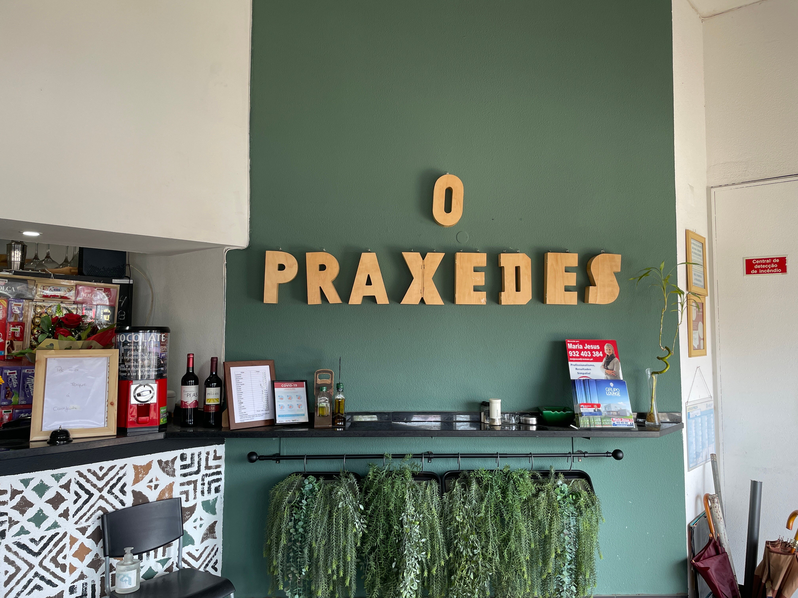
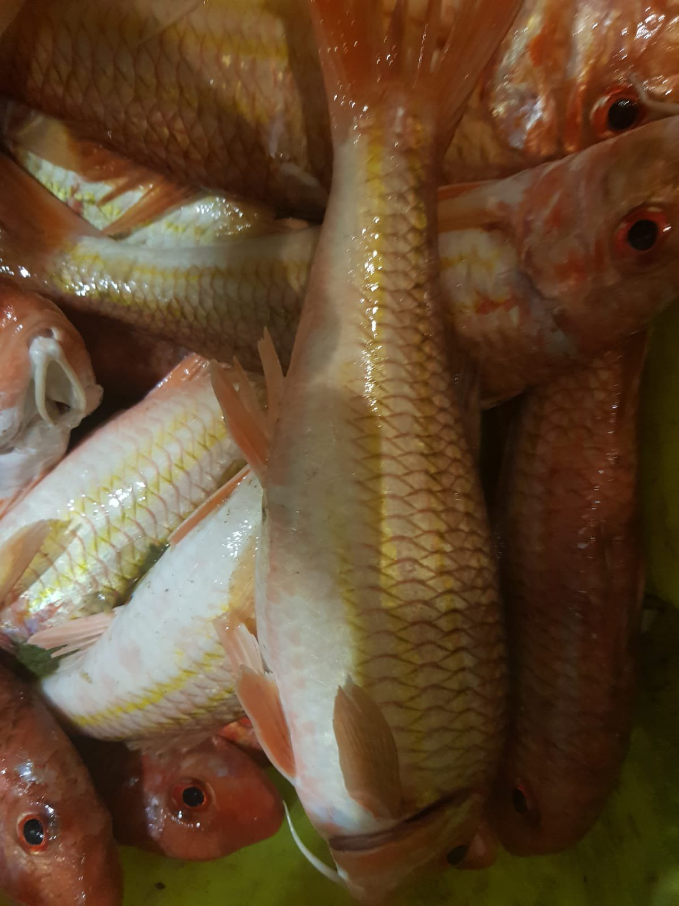
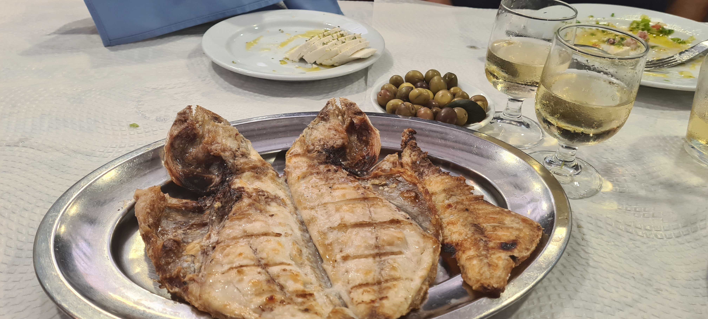
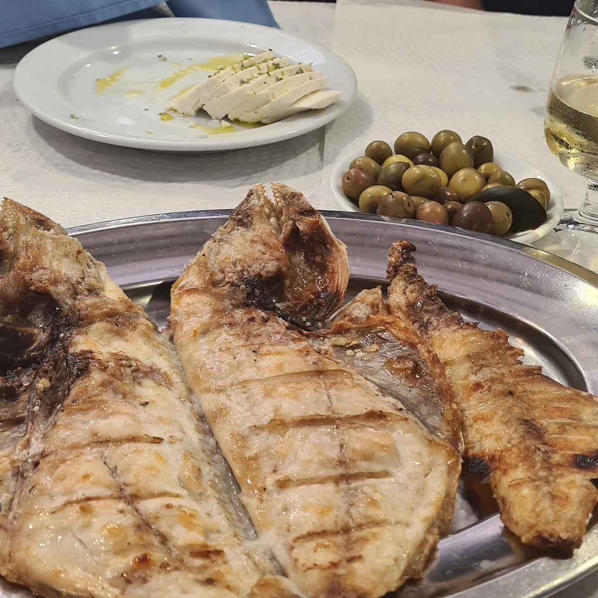
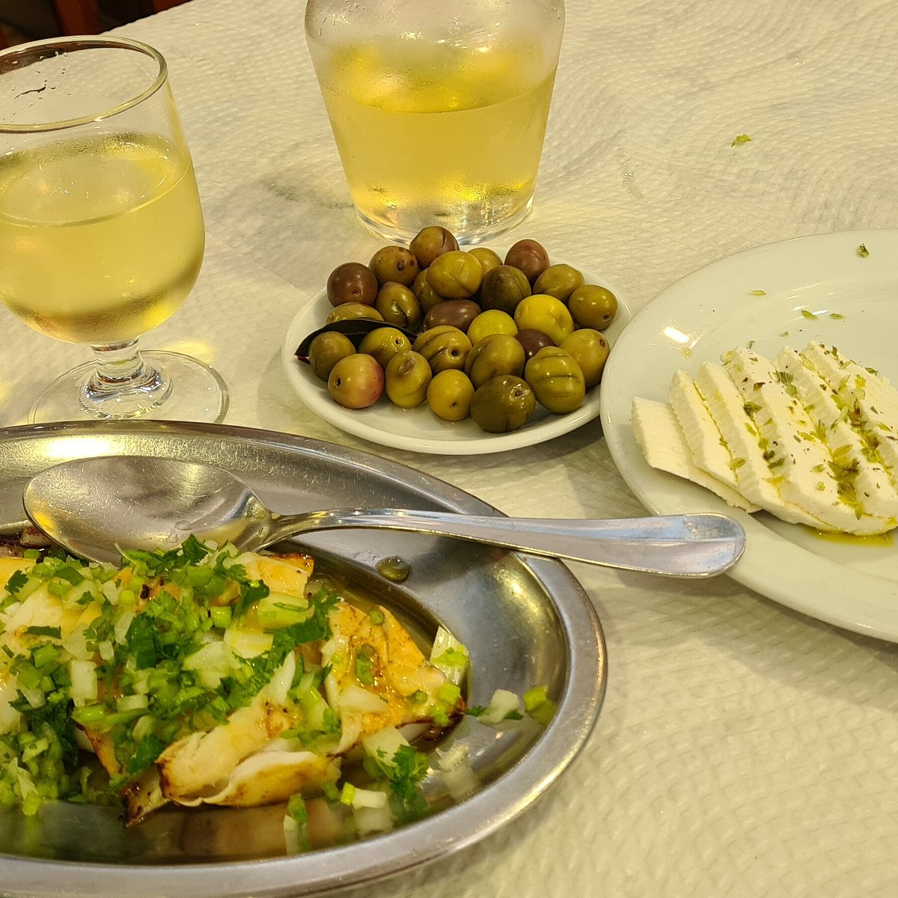
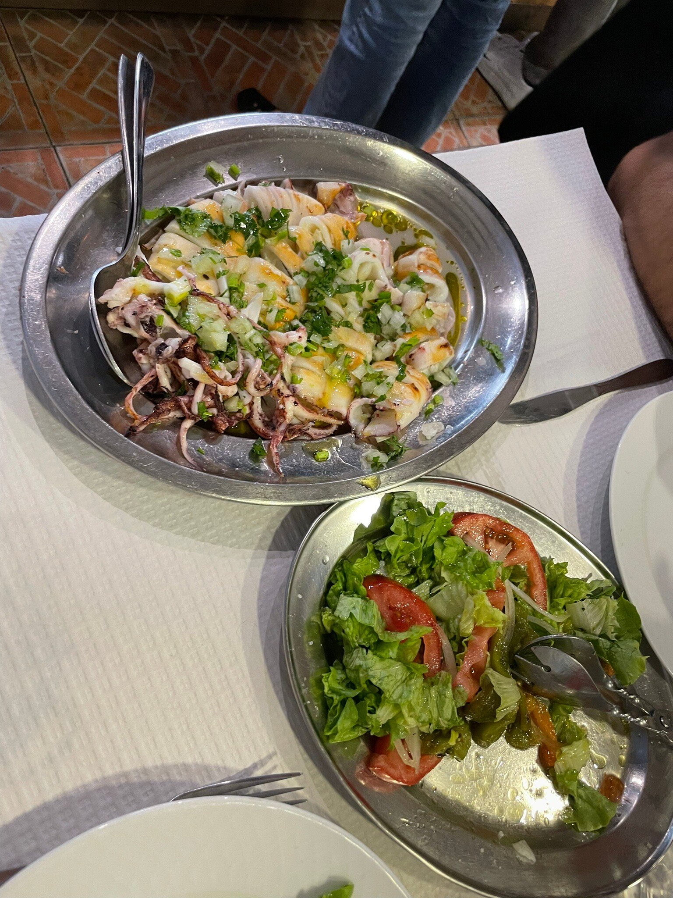
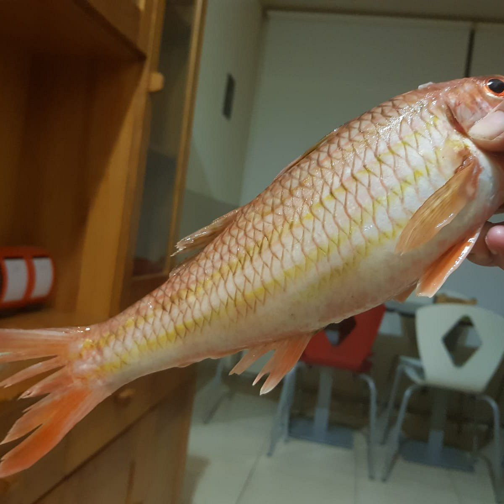
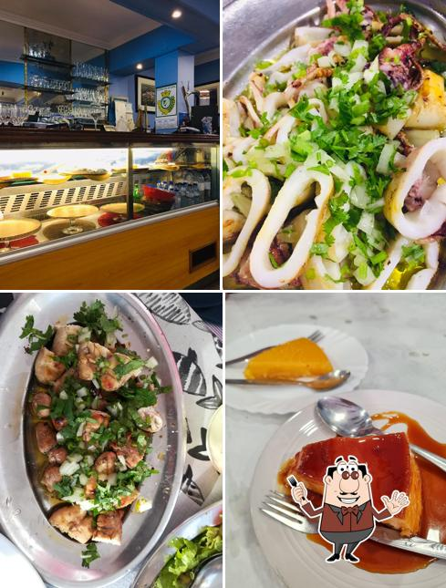
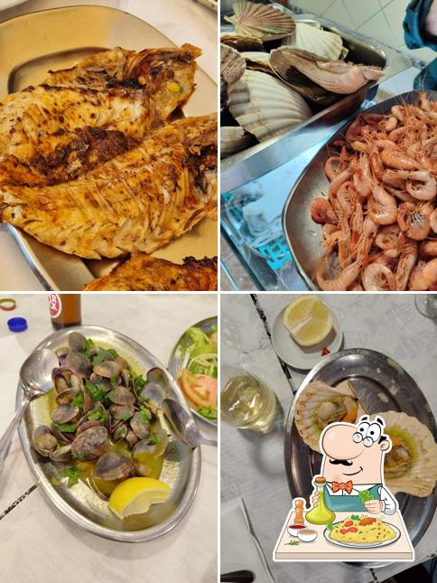
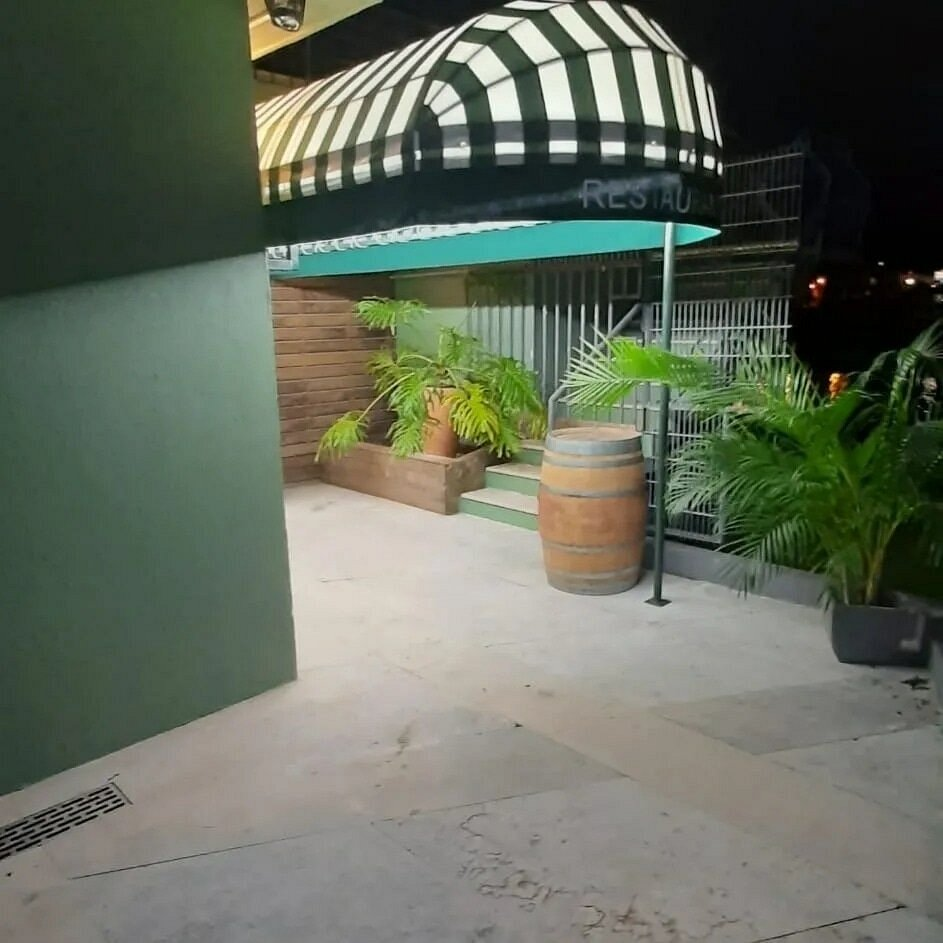

Escolha o seu peixe na montra, grelhamos na hora. Produto do dia, sabor sem rodeios.

O Batareo fica na Rua das Fontaínhas, mesmo à beira do Sado. O conceito é simples: peixe e marisco frescos, expostos na montra à entrada, grelhados na hora à sua escolha.
Não há segredos nem molhos complicados. Só produto do dia, brasa, e azeite. É o restaurante de peixe que muitos imaginam mas poucos encontram.
O peixe varia com o dia e a maré. Preço ao quilo, grelhado na brasa.
* O peixe é exposto na montra à entrada — escolha o seu e grelhamos na hora. Preços variam com a época.








"Peixe fresco como não há igual. Escolhemos na montra, estava na mesa em minutos. Voltamos sempre que estamos em Setúbal."
"Lugar escondido que vale cada passo. O robalo na brasa estava simplesmente perfeito — produto fresco, preparação simples e honesta."
"O melhor peixe grelhado que comi em Portugal. Simples, fresco, honesto. O Batareo é daqueles restaurantes que não precisam de fazer publicidade."
Rua das Fontaínhas 64
2910-082 Setúbal
Terça a Domingo
12h00 – 15h30
Encerra à Segunda